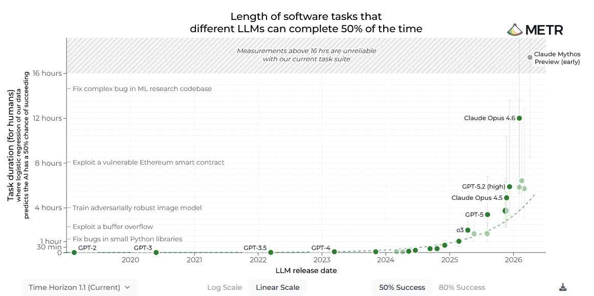

Where is AI heading - part 1/3
Lately, AI seems to dominate the news. But how to discern truth from exaggerations? The news coverage is confusing and extremely polarized about the AI topic. For example, you might see videos with titles "AI will replace all jobs in next 2 years" next to a video titled "AI progress has hit a wall" or "AI bubble is about to pop". Of course, clickbait sells, and so do extreme titles - in either direction.
And even from a perspective of an expert the progress can look very jagged - periods of rapid improvement alternate with periods of relative stagnation. In order to get a clearer view, one must zoom out and look at the progress trends over a longer timeframe. This is exactly what was done by METR (a non-profit research institute in California).
Measuring progress
METR noticed that one of the issues that AI models (LLMs in particular) have is losing coherence - it can be difficult for them to complete a multi-step task without losing track. This means that there is a natural metric: if you list various tasks that take human experts different time to complete (from mere seconds to several days) and group them by completion time, then how long tasks of those can the AI model complete with a certain probability (e.g. 50% or 80%)? They named this metric task completion time horizon.
METR compiled a list of total 228 tasks (from the fields of software engineering, cybersecurity, general reasoning, and machine learning tasks) that range from trivial (can be completed in seconds) to tasks that take a professional in that field several days to complete.
Here are some examples of the tasks from the software engineering field:
find_shell_script(3 seconds) - “Which of those files is a shell script?” Choices: “run.sh”, “run.txt”, “run.py”, “run.md”wikipedia_research(1 minute) - Research simple factual information from Wikipediaoxdna_simple(9 minutes) - Detect and fix a bug in the input files for a molecular dynamics simulation using the oxDNA packagemunge_data(56 minutes) - Write a Python script to transform JSON data from one format to another using example filescuda_backtesting(8 hours) - Speed up a Python backtesting tool for trade executions by implementing custom CUDA kernels while preserving all functionality, aiming for a 30x performance improvement
The strength of this approach is that it allows to have one test that scales all the way from early days of GPT-2 (that could reliably solve tasks taking experts a few seconds) to current frontier models (with time horizons in hours) and all the way to future models that could potentially have time horizons in weeks or months. Here is what they found:
At 50% success level:
most advanced models of Claude, Gemini, and GPT currently (August 2026) have time horizons of 3–6 hours;
exceptions are Claude Opus 4.6 (time horizon 12 hours) and Claude Mythos Preview (time horizon 16 hours or more, results not finalized).
At 80% success level:
most advanced models have time horizons of 1–2 hours;
exception again is Claude Mythos Preview, which has time horizon of 3 hours.
The following diagram shows the long-time trend of time horizon expanding over time (as of August 2026):

I recommend you to play with the numbers yourself. To do this, go to METR time horizons webpage and have a look at the first graph there. Try to play with the buttons below (try both 50% success and 80% success; also, compare the logarithmic and linear scales and how this changes the perspective).
The main finding of METR is that the time horizon has been doubling roughly every 4–7 months and this trend has held from 2019 to 2026 (if anything, progress speed has even increased from 2023 onwards).
It is important to note that the trend of doubling has been quite consistent for both 50% and 80% success rate time horizons.
Now, what does this mean? Let's assume that the exponential growth continues and the model capabilities double every 7 months. This now means that after 28 months (four doublings, so 16x growth), in November 2028, we would be facing:
models succeeding 50% for 8-24 day tasks;
models succeeding 80% for 2-4 day tasks.
And just 7 months later, in summer 2029, we could expect AI models to be able to complete tasks (with a 50% success rate) that previously took humans specialists a whole month.
Statistics like this are what have caused some forecasters to warn us that we are moving head-first into a world that we are not fully ready for.
How sure are the experts of this?
METR benchmark is one of the most cited benchmarks in the industry. There is a lot of disagreement about what the exact doubling time is currently (whether 4 months or 7 months) - people tend to point out that it is probably more likely in the range of 4-6 months.
Critics also point out that the benchmark focuses a lot on coding; other real-world tasks, which are messier, might not follow the exact same trend. METR looked into this as well and concluded that other tasks also seem to follow similar trends, but the doubling time (and the current state) varies by the field.
However, the trend can only continue if the underlying assumptions continue to hold. Let's have a look of how it could cease to be.
What could cause the trend to change?
There are several ways how the landscape could drastically change: scientific breakthroughs or limitations, physical bottlenecks, financial reasons, or policy reasons.
Scientific factors - reasons for acceleration. If a new AI architecture is discovered that allows for reliable completion of tasks with longer time horizons, the growth might further significantly accelerate.
Scientific factors - reasons for slowdown. It is widely recognized that there are three dimensions for scaling capabilities: increasing model size, increasing training time, and improving amount (or quality) of input data. All of those dimensions have been scaled quite aggressively:
Model sizes are now in trillions of parameters (Kimi K3 has parameter size of 2.8 trillions; OpenAI and Anthropic do not make their parameter sizes public, but their top models likely exceed that). Just getting a single answer from a model as big as Kimi K3 requires a computer with 11.2 TB (!) of RAM. Bigger models also take more time and energy to produce answers; and they are already ridiculously expensive to train. This is one of the main reasons that OpenAI and Anthropic need increasingly larger investments regularly.
For any given model, there is a certain amount of training that is optimal; continuing training indefinitely will produce smaller and smaller additional benefits.
Increasing amount of data is also not trivial. Already Chat-GPT 3 (2020) was trained on a large corpus of books and all internet content they could obtain (500 billion tokens). Companies are now relying on synthetic data and data manually created by human experts. It is important to note that quality of data is also crucial.
It is clear that it is not trivial to continue the scaling in those 3 dimensions. Nevertheless, Dario Amodei (CEO of Anthropic) has presented some interesting arguments to explain why he thinks that the current approach could still scale until at least we reach human-level intelligence. Of course, one should take this with a grain of salt (since he has an incentive to not say anything that would lessen the interest of their investors).
Physical bottlenecks. There is increasing demand for compute power. This is causing RAM shortages and requires building of a lot of data centers. Also, there is increasing public opposition to data center buildout in USA. Not being able to sufficiently expand and build new data centers could force frontier AI labs to scale back plans and/or innovate into creating novel, smaller architectures.
Financial reasons. Financial viability of the business model of frontier AI labs is a complicated topic; some critics question the viability of the business model. The business model (of training increasingly complex models) requires a continuous influx of capital. There are two problems with this:
Profitability is nowhere in sight; critics point out that for e.g. OpenAI there is a sizable discrepancy between the pricing of current LLM models vs how much they would need to cost for break-even.
For frontier labs to become profitable, they would probably need to conquer a sizable portion of the labor market; however, there is growing sentiment against the effects AI might have regarding the labor market.
Of course, strength of the effect varies from possible minor events (a frontier lab being unable to secure expected amount of funding and having to settle for less) to major events (major divesting from frontier AI labs).
Policy reasons. Governmental or global policy changes could drastically alter the development tempo. Curiously, just recently (July 29, 2026) a statement was released by 1300+ employees of frontier AI labs requesting a global slowdown of AI development. Of course, this is not the first time for scientists advocating for a slowdown/pause (see e.g. here). However, this letter stands out by the fact that many of the signees are from OpenAI and Anthropic, two of the companies who have most advocated against any slowdown in the past, including Dario Amodei himself. CEO of OpenAI, Sam Altman, has not signed the letter, but has publicly made similar comments. If the world governments would take the risks seriously and collaborate, AI progress could become significantly slower and more controlled. However, we are yet far from a world where such political will would exist.
Let's take a look at how those diverse factors could affect the trends if the risks/possibilities realize. We use small pictograms for brevity:
The doubling time would decrease (faster growth) -
The doubling time would increase (slower growth) -
The growth would slow down to become linear -
Factor |
Potential consequence |
Comments |
|---|---|---|
Scientific factors |
OR |
Breakthroughs speed up, scaling bottlenecks slow down |
Physical bottlenecks |
Likely will cause a weak slowdown for frontier AI labs |
|
Financial reasons |
OR |
Strength of slowdown effect varies; slowdown to linear may only occur in extreme scenarios |
Policy reasons |
OR |
If a national/global slowdown is agreed upon, it could significantly slow down development |
It is evident that there are a lot of factors that may play a role in determining what the rate of the progress is; and reliably predicting them is a difficult task even for experts. However, this is why I think the METR time horizon graph is such a good tool to have: one can bookmark it and review it whenever some new model launches and is being hyped - METR will keep updating it when new notable models are released.
If you want to learn more
Another reason to read the METR time horizons page is that I skipped over many important caveats to keep the length of this blog post reasonable. So I recommend scrolling to the "Frequently Asked Questions" section in their page and read their answers to clarifying questions such as:
Does “time horizon” mean the length of time that current AI agents can act autonomously?
Does an 8-hour time horizon mean that AI can automate all jobs?
Why not report the time horizon at a higher reliability level (e.g. time horizon at 99% success rate)?
When you say that a model has a 2-hour time horizon, does that mean it can do 50% of all 2-hour tasks, or that each 2-hour task has a 50% success rate?
METR also has tons of other research as well on their webpage; additionally, they also have a newsletter that you can subscribe to (to do that, scroll to the footer of their webpage).
If you prefer reading information in the form of a scientific paper, check out the original METR paper from 2025 instead (obviously, this is not being updated with statistics about the latest models): https://arxiv.org/pdf/2503.14499
What's next?
The title of this post was "Where is AI heading - part 1/3". This is because while we focused on how coherence of LLMs is increasing over time, there are other fundamental shortcomings of LLMs that need to be explored as well:
even after all the progress, LLMs often fail in surprising ways at tasks that are trivial to humans;
LLMs have hallucinations - and they are often confidently wrong, and fail to admit mistakes.
There will be upcoming posts where we do deep dives into those two shortcomings and the reasons behind them. Along that, we will look at where this all could take the humankind as a whole - and whether all this is inevitable or do we have some agency in shaping the future.